Soberanía Tecnológica
Sociedad civil frente a la censura
Autor Iker Landajuela ikerlandajuela / @ikernaix / https://ikerlandajuela.wordpress.com/
Bloqueos DNS y censura en la red
Sitios Web censurados
La primera web referendum.cat fue cerrada por orden judicial el 13 de Septiembre, sólo seis días después de su publicación, sólo hay que ver el aspecto que sigue ofreciendo hoy en día
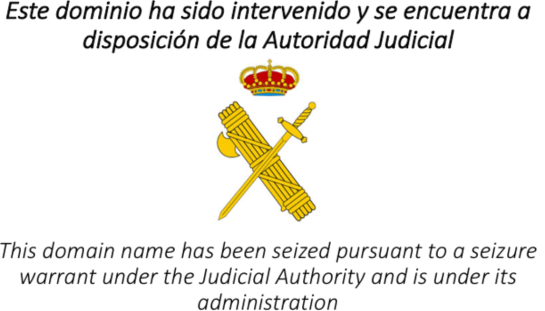Sitios Web censurados
Esta Web tenía como propósito informar sobre la consulta, la orden de bloqueo proviene del juzgado de instrucción nº 13 a petición de la GC.
Parece que la empresa que aloja la Web es 10dencehispahard S.L. (CDmon.com)) y Akamai Technologies.
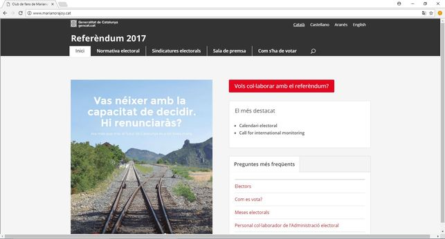Sitios Web censurados
Como era predecible surgen clones de la Web original, la medida judicial solo alimenta una respuesta más virulenta casi imposible de detener ya. Es imposible ponerle puertas al campo.
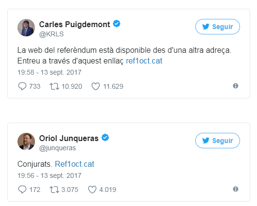Sitios Web censurados
Inmediatamente se hicieron públicas dos direcciones alternativas.
ref1oct.eu con dominio de la UE, registrada por la empresa EuroDNS S.A con sede en Luxemburgo. Actualmente esta Web esta inaccesible.
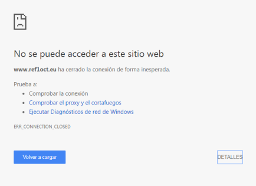Sitios Web censurados
Una consulta Whois.net muestra algunos datos sobre la empresa que registra el nombre, Xabier Buck (Linkedin) sólo es un directivo de la empresa EuroDNS que ofrece servicios de alojamiento a miles de otras Webs.
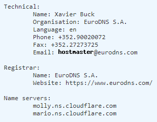Sitios Web censurados
La segunda Web espejo es ref1oct.cat y se encuentra intervenida por autoridad judicial como la original. Se pueden obtener más datos del registrante del nombre ref1oct.cat realizando una consulta Whois en fundacio.cat.
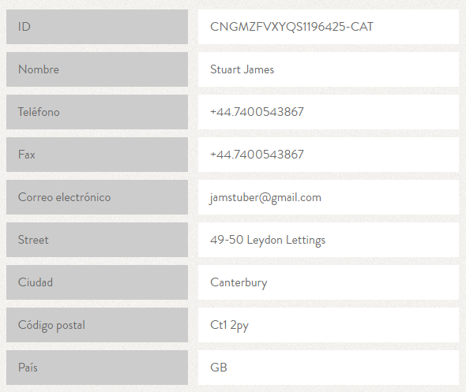Sitios Web censurados
Se presume que desde Madrid se ordena a ISPs (Internet Service Provider o proveedores de acceso a Internet) que bloqueen el acceso a sitios específicos, sospechamos que se produce un bloqueos DNS.
Respuesta del Govern
24/09/2017: Carta del gobierno de Cataluña, escrita por Jordi Puigneró (@jordiPuignero) presidente del CTTI (Centro de Telecomunicaciones y Tecnologías de la Información) dirigida al Vicepresidente y Comisario europeo de Mercado Único Digital (Digital Single Market) Andrus Ansip. [PDF]
Respuesta del Govern
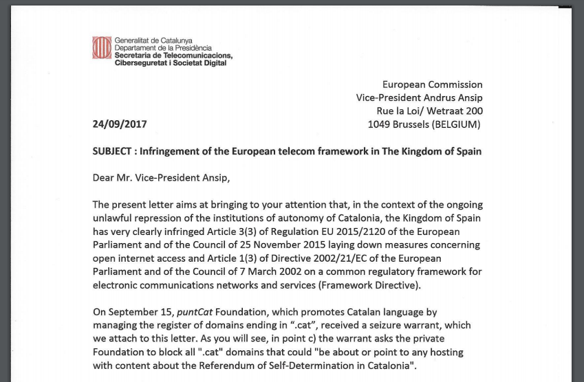
Respuesta del Govern
En la misiva el gobierno Catalán denuncia los abusos y la censura por parte del estado Español. Concretamente destaca varios artículos de la regulación de la UE que regulan el acceso libre a Internet.
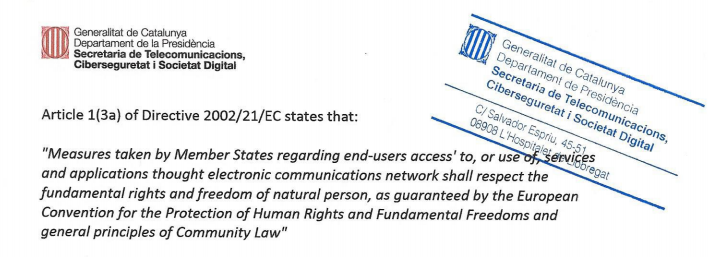
BOE. Reglamento (UE) 2015/2120 [PDF]
Respuesta del Govern
Al final de la carta reseña dos medidas desproporcionadas del estado:
- La orden judicial enviada a Fundació punt CAT solicitando la censura de cualquier Web relacionada con el referéndum.
- La orden enviada a operadores de telecomunicaciones (ISPs) pidiendo bloquear los servidores Proxy.
Fundació punt CAT
Fundació puntCAT(@puntcat) es el organismo que regula los nombres de las Webs acabadas con .cat como la citada arriba referendum.cat. Actualmente tiene registrados 112.984 sitios Web con esta terminación (servidores DNS púbicos).
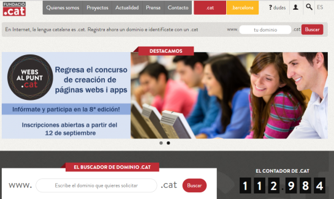
Fundació punt CAT
puntCAT solo regula los dominios .cat pero tiene un hermano mayor que los regula a nivel mundial y se llama ICANN (La Corporación de Internet para la Asignación de Nombres y Números con origen en EEUU). puntCAT escribe una misiva al ICANN el 17/09 [PDF]) dirigida a Göran Marby (presidente y CEO de ICANN) informando que el 15/09 las autoridades judiciales Españolas ordenan bloquear cualquier Web .cat que contenga cualquier información referente al 1-O. Tachan las prácticas de censura y ataque a la libertad de expresión, la carta está firmada a su vez por Eduard Martin Lineros CEO y fundador de puntCAT.
Servidores DNS
De manera algo sencilla, cuando introducimos referendum.cat sólo es un nombre para facilitarnos recordar un sitio Web, realmente detrás de ese nombre existe una máquina identificada con un número único en Internet. Todo ese proceso de conversión de nombre a números lo hacen otras máquinas en Internet llamadas servidores DNS (Domain Name System o Sistema de Nombres de Dominio).
Es muy habitual que nuestro ISP nos proporcione esos números de los servidores DNS que se suelen configurar en nuestra computadora.
Precedentes en el mundo
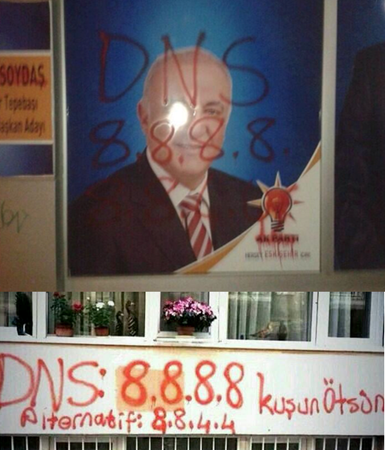Precedentes en el mundo
Tristemente la medida no es original. En el 2014 el gobierno Turco trata de silenciar la oposición política aplicando el bloqueo DNS.
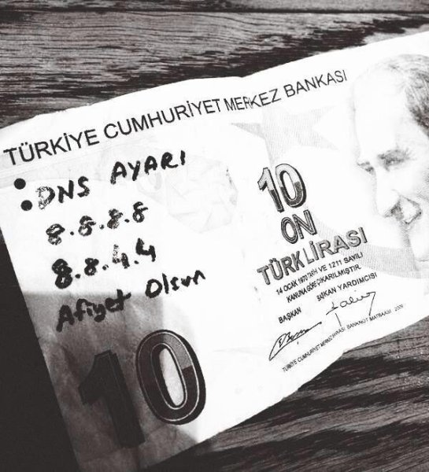
Precedentes en el mundo
Esta medida no es extremadamente difícil de sortear, los internautas turcos cambiaron la configuración de sus ordenadores para usar la dirección IP de los sevidores públicos de Google, ahora cuando introducen la dirección de Twitter o de Youtube por ejemplo la resolución del nombre en números lo hace otro DNS.
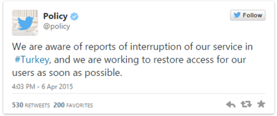
Precedentes en el mundo
Uno de los objetivos predilectos de estos estados suelen ser las redes sociales. Turquía no es el primero ni el último en restringir el uso de las redes sociales y las plataformas de internet. La lista es muy larga e incluye paises como: China, Vietnam, Turquía, Iran, Corea del Norte y ahora España.
El gobierno Chino es conocido por bloquear sitios de noticias o páginas que contengan información sobre el movimiento de liberación del Tibet entre otras muchas.
Precedentes en el mundo
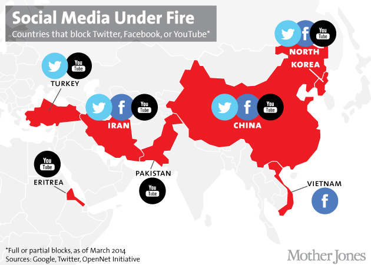
Buscando evidencias de la censura
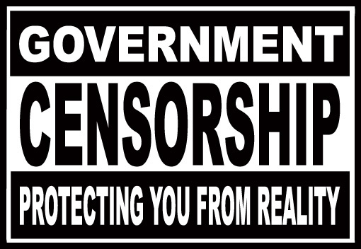
OONI: Open Observatory of Network Interference
OONI (@OpenObservatory ) se definen como un observatorio global de la red para detectar la censura. Es parte del proyecto Tor ((@torproject). Usan software libre para recopilar evidencias de bloqueo de Webs.
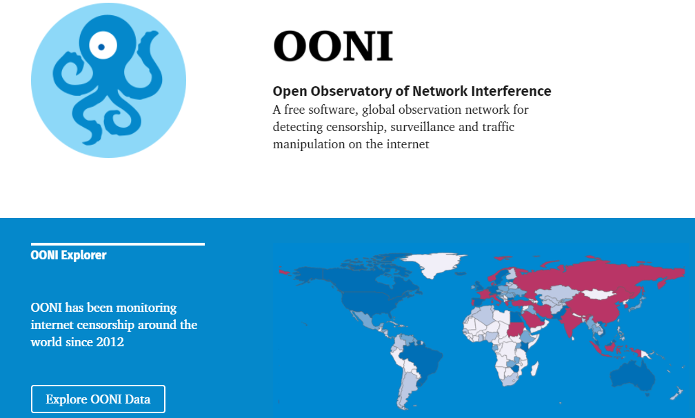OONI: Open Observatory of Network Interference
OONI confirma el bloqueo de 25 sitios Web relacionados con el referéndum usando medidas como:
- “DNS tampering” (manipulación de DNS).
- “HTTP blocking” (bloqueo de HTTP).
Los datos de OONI muestran que estos sitios fueron bloqueados cada día desde (al menos) el 25 de septiembre de 2017 (cuando la prueba comenzó) hasta el día del referéndum, el 1 de octubre de 2017.
OONI: Open Observatory of Network Interference
Para recopilar evidencias que demuestran cómo los sitios asociados al referéndum catalán fueron bloqueados se usa OONI Probe(software gratuito y abierto que cualquiera puede ejecutar para medir el bloqueo de sitios web).
Listado parcial obtenido de OONI con las Webs bloqueadas:
OONI: Open Observatory of Network Interference
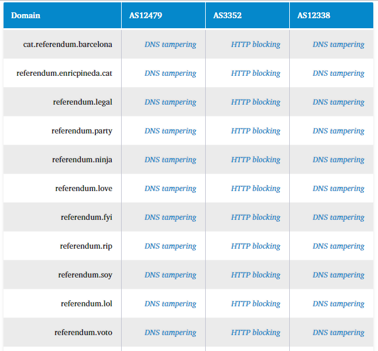OONI: Open Observatory of Network Interference
referendum.cat fue redirigido al dominio paginaintervenida.edgesuite.net alojado por Akamai el 13 de septiembre.

OONI: Open Observatory of Network Interference
France Telecom España (AS12479) y Euskaltel (AS12338) bloquearon el acceso a sitios mediante la manipulación de DNS, mientras que Telefónica (AS3352) sirvió páginas de bloque mediante el uso de proxies transparentes HTTP.
OONI: Open Observatory of Network Interference
El Tweet publicado por OONI el 26 de Septiembre muestra las evidencias del bloqueo DNS sobre la Web referendum.party.
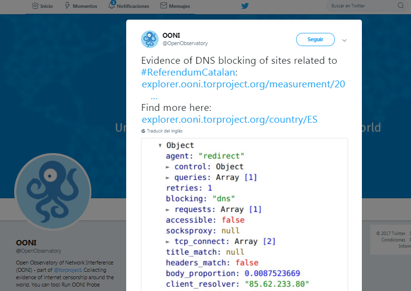Técnicas para censurar sitios Web
DNS tampering
Consiste en intervenir los servidores DNS, estos son los que resuelven un nombre de dominio en una dirección IP de red. Normalmente cada ISP mantiene su propio servidor DNS para sus clientes. Para bloquear el acceso a sitios Web los servidores DNS se configuran para retornar una dirección incorrecta (pueden redireccionar la llamada a otra Web).
Técnicas para censurar sitios Web
2012: Yotube es bloqueado en Pakistán, el bloqueo se alarga hasta el 18 de Junio del 2016. El gobierno alega que el bloqueo ya no es necesario porque Google, propietario de Youtube ha creado una versión específica para Pakistán youtube.com.pk .
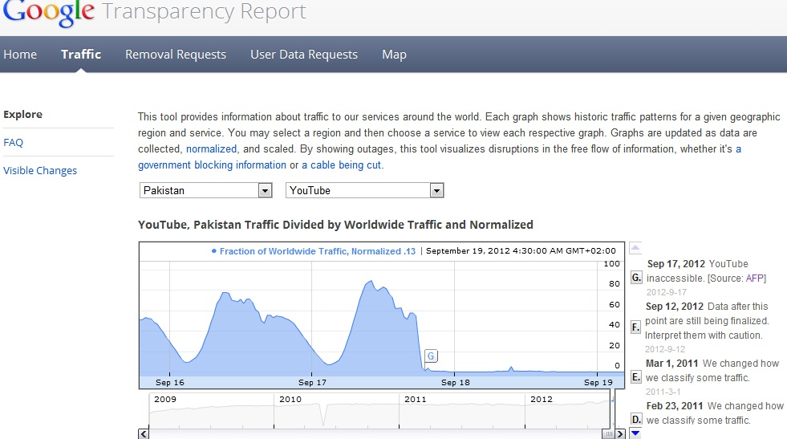Técnicas para censurar sitios Web
El caso del gobierno Chino es tan clamoroso que existen Webs que nos informan si una dirección Web está bloqueada (en 2015 alrededor de 3000 sitios Web estaban bloqueados).
Ejemplo greatfirewallofchina:
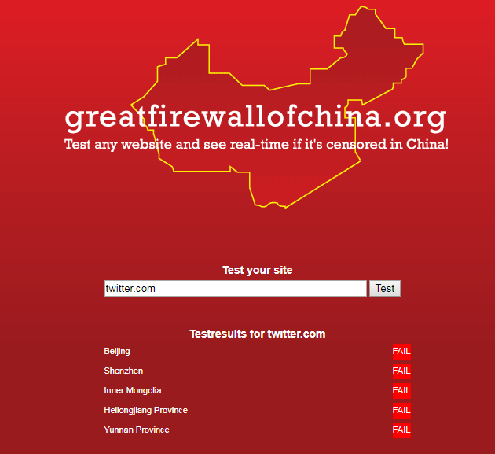Técnicas para censurar sitios Web
Bloqueo de HTTP
Esta técnica inspecciona, intercepta y altera el tráfico en la red por lo que las peticiones HTTP a URLs son reemplazadas por una nueva página (“página bloqueada”) indicando que éstas han sido bloqueadas. Registros de tráfico web y análisis de los bloqueos indicaron que Telefonica puede estar usando tecnología israelí de la empresa Allot Communications.
Técnicas para censurar sitios Web
Apropiación del dominio CAT
Una vez que Fundacio .CAT acató la orden judicial, los dominios han sido redirigidos por medio de DNS al dominio paginaintervenida.edgesuite.net alojado en Akamai. Muchos dominios .cat, sin embargo, también fueron bloqueados por medio de la manipulación de DNS y el bloqueo de HTTP.
Efecto Streisand: Hactivistas y movimientos sociales
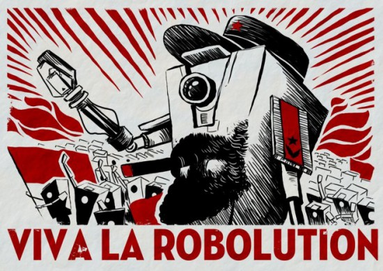Efecto Streisand
El efecto Streisand es un fenómeno de Internet en el que un intento de censura o encubrimiento de cierta información fracasa o es contraproducente, ya que esta acaba siendo ampliamente divulgada o reconocida. De modo que recibe mayor visibilidad de la que habría tenido si no se la hubiese pretendido acallar (El término debe su nombre a un incidente ocurrido en 2003 con la actriz estadounidense Barbra Streisand, que denunció al fotógrafo Kenneth Adelman y su página de fotografías).
Delito de desobediencia
La censura y la prohibición alienta a ciudadanos anónimos a replicar las Webs originales intervenidas por mandato judicial. En seguida comienzan a llegar citaciones a declarar a las personas que presuntamente están detrás de las cuentas registradas en las plataformas usadas en Internet.
En la mayoría de los casos a los citados a declarar se les acusa de delitos de desobediencia por hacer "espejos" de las Webs cerradas.
Delito de desobediencia
Una orden de registro del domicilio (@GrenderG) apunta directamente a la plataforma GitHub como medio de replicación de contenidos, especialmente la Web referendum.cat donde se podía consultar el centro de votación introduciendo el DNI, fecha de nacimiento y el CP.
Las acusaciones a cargos políticos públicos son más graves: Sedición y rebelión en la mayoría de los casos.